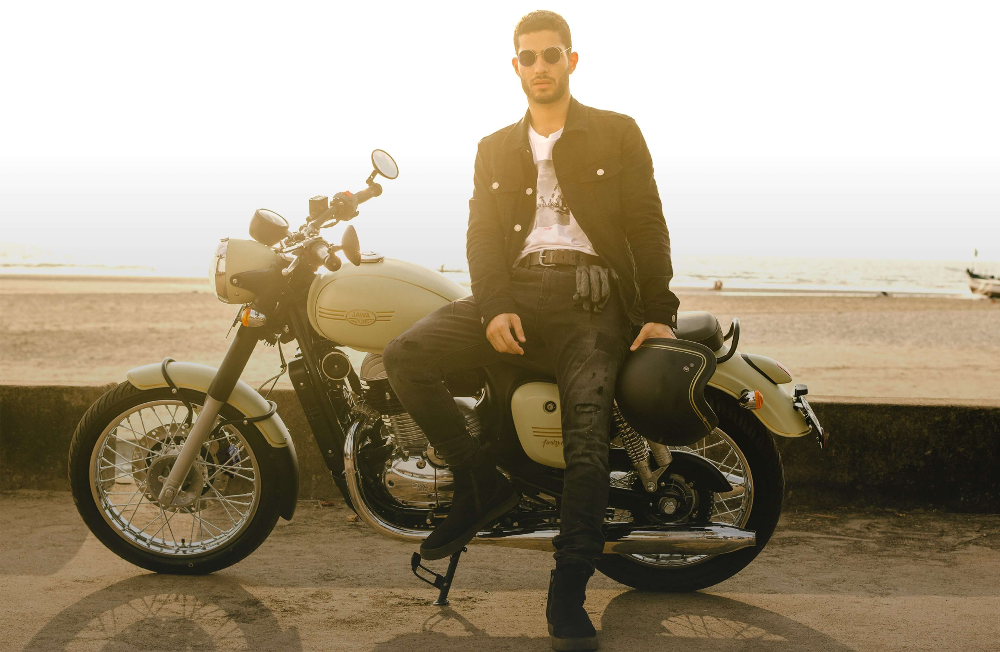
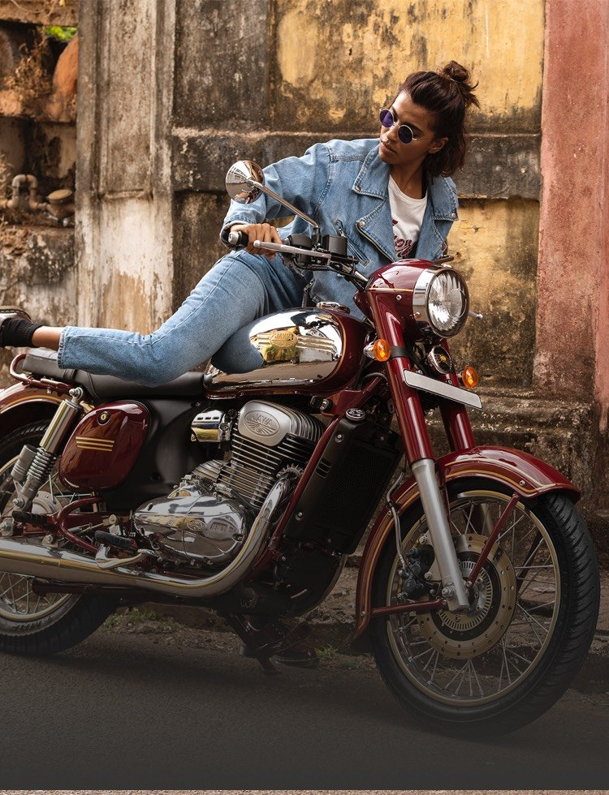

It’s a Jawa alright – but it’s like no Jawa you’ve seen before. It’s the same rugged reliability, but with a fresh, modern look. From its quality matte finish to dazzling chrome detailing, the Forty Two represents a brilliant new chapter in Jawa history – a fresh invitation to the freedom of the open road. Continually pushing the envelope, the Forty Two introduces premium Italian engineering to legendary Jawa build quality to create the ultimate motorcycling experience – with dreamy handling, smooth acceleration, and tight braking. And the only thing that’s missing is you. Are you worthy?
₹ 1,55,000 (Ex Showroom – Delhi)


A consummate classic is timeless. It’s always right at home, no matter where it goes. Meet the new Jawa. With its polished chrome and retro curves, the Jawa combines nostalgic class and modern engineering for a timeless look and a ride like no other. Uncompromising build quality from premium Italian engineering means the 50s design is every bit as rugged and reliable as the classics. You’ve heard the stories. Start creating your own.
₹ 1,64,000 (Ex Showroom – Delhi)